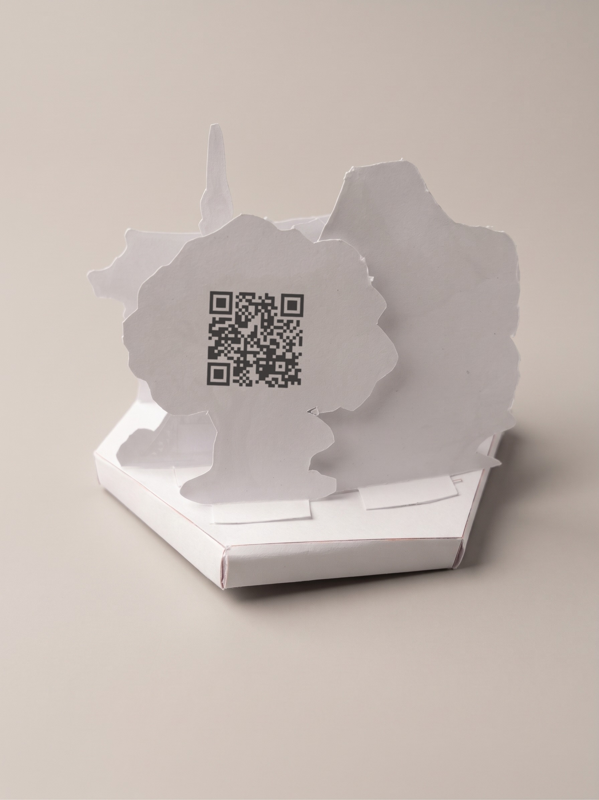
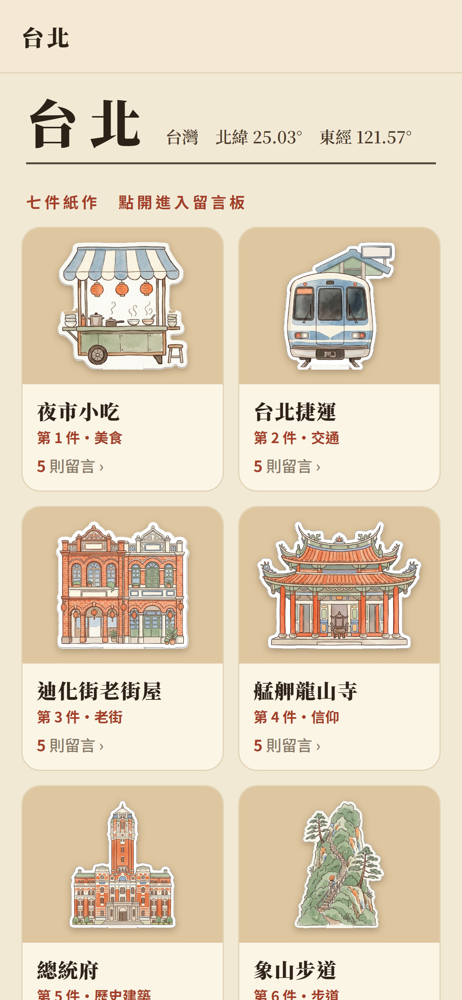
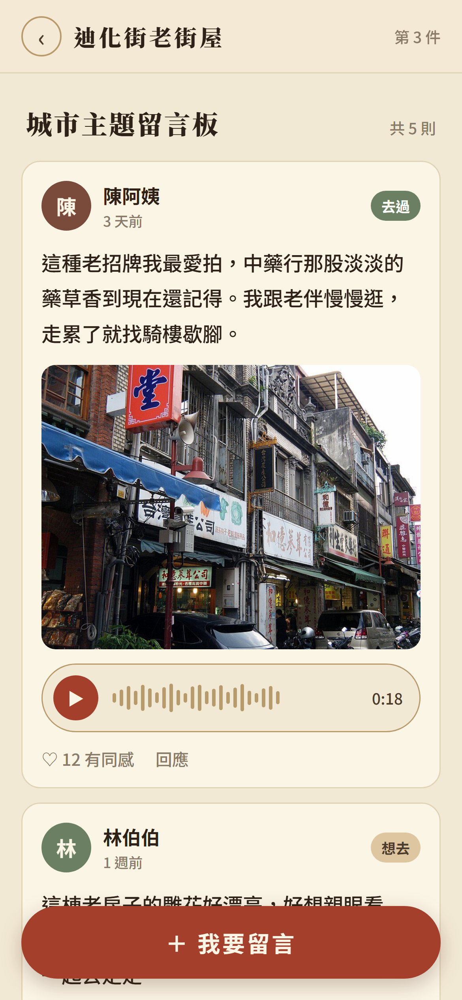

跟著日曆去旅行
聚焦的主題
旅遊
想去哪裡，
常與自己的喜好、
生活經驗和
親友話題有關
›
自選主題包
依照自己的喜好與生活經驗和親友話題選擇
世界城市
台灣城市
日本城市
澳洲城市⋯
內在動力
選自己有興趣的
1
長期參與
日常
›
2
日曆載體
自選主題
›
3
接起循環
圖斷差
›
4
慢慢累積
成作品
›
5
卡扣拼接
世界城市
設計思考脈絡
掃 QR 之後，在手機上看到的三步
›

1
掃描
掃底座背面的 QR，免下載免註冊
›

2
認識城市
台北的故事，點開進入留言板
›

3
城市主題留言板
照片、文字、語音都能留言
HMW
幫助退休後的樂齡族群，讓藝術成為生活的一部分，
無壓力且低負擔地長期參與日常藝術創作，達到「藝術創齡」。